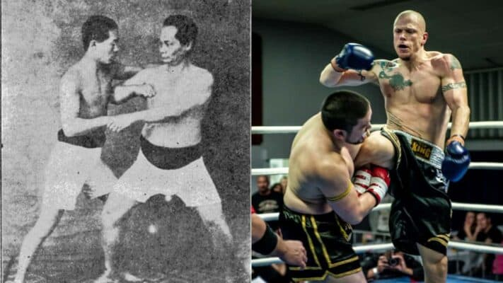

Storia del Kickboxing
Il kickboxing è un'arte marziale moderna che ha le sue radici in Giappone negli anni '60. È stato creato come un modo per combinare le tecniche di pugilato occidentale con quelle delle arti marziali orientali come il karate e il muay thai. Da allora, il kickboxing si è evoluto in uno sport popolare e riconosciuto a livello internazionale.
Uno dei primi pionieri del kickboxing moderno è stato Osamu Noguchi, un promettente karateka giapponese che ha sviluppato un nuovo sistema di combattimento chiamato "karate full-contact". Questo stile ha permesso ai combattenti di utilizzare calci e pugni con maggiore potenza e impatto, portando alla nascita del kickboxing.
Negli anni '70, il kickboxing ha iniziato a guadagnare popolarità negli Stati Uniti grazie a promotori come Joe Lewis e Chuck Norris. Da allora, il kickboxing è diventato una disciplina praticata in tutto il mondo, con numerosi campionati e competizioni a livello amatoriale e professionale.
Oggi, il kickboxing è uno sport popolare che continua a crescere, con migliaia di atleti che competono in tutto il mondo. Ha anche guadagnato riconoscimento come forma efficace di allenamento per la forma fisica e l'autodifesa.
